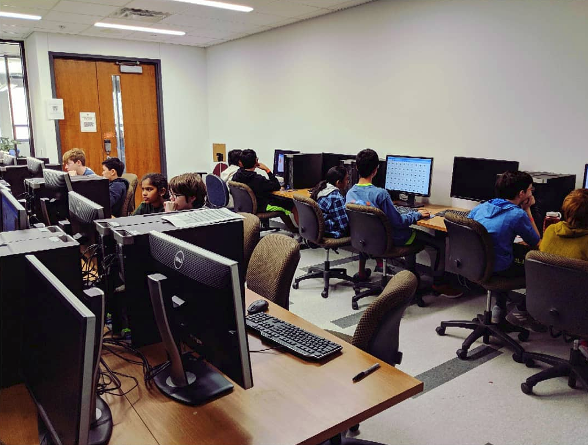
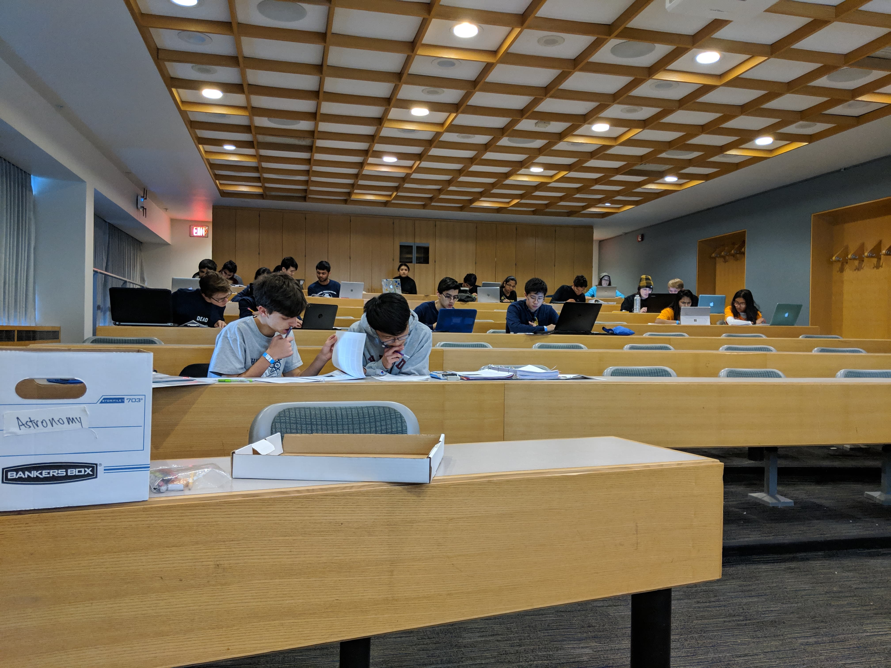

2018-2019 season
UT Regional: Feb 2019
The UT Astronomy exam borrowed quite heavily from the Princeton exam (because I was lazy). Nonetheless, here's the test and key. The mean score was around 65 raw points, although the sample size is small (only 6 teams competed).
In more exciting news, I finally trialled my computer science event: Algorithm Design! It's a python-based event that emphasizes both theoretical and practical programming knowledge. The topics include Python syntax, basic programming concepts, Object oriented design, data structures, and the time and space complexity of operations/algorithms on those data structures. Teams are expected to complete both a written test, as well as write code (in a real IDE!) to solve coding challenges. Here are the event materials, minus the coding challenges.
All the competing teams did much better than I expected, which makes me really happy -- it means I can make it harder next time. I definitely intend to expand on this event, and I'm really excited to try running it again at next season's UT Invitational. Thank you to all the teams that participated, I really appreciate it!
Princeton Invitational: Feb 2019
I really enjoyed being the event supervisor at the Princeton Invitational this year. There was a pretty nice (albeit bimodal) score distribution; I think the extensive multiple choice section helped with that. You can see the score distribution and get the exam and key at Princeton's dropbox here. (The score distribution they posted doesn't reveal the bimodality, due to the scaling and binning of the histogram.) A big thank you to Princeton Scioly for having me -- they were all super friendly and I met lots of great people there!
MIT Invitational: Jan 2019
This year I had the pleasure of supervising at the renowned MIT invitational (along with Donna and Aditya), where we got to see many talented teams from across the country compete. Here is the exam and key we used, with minor corrections. (I've posted another helpful document at the end of this post).
This year's exam was, in my opinion, at least an order of magnitude harder than last year's. This resulted in generally low scores across the board. In addition to the objective difficulty, the exam was also long. This meant that performing well was a matter of good (lucky?) time management as much as it was about actual skill. In my opinion, that's not how an exam should be, and I take responsibility for underestimating the difficulty and length of the exam. It's also only mid-season, so teams are not as prepared as they will be when they compete at state/nationals.
Here are some statistics about the scores of the 71 teams that competed. The exam totalled 126 points, out of which 64 came from section A, 26 came from section B, and 36 came from section C.
| Section A | Section B | Section C | Overall | |
|---|---|---|---|---|
| Mean | 34.0% | 29.6% | 22.0% | 30.2% |
| Standard Deviation | 17.1% | 20.8% | 14.3% | 14.6% |
The score distribution was unimodal, with a very shallow, linear dropoff on the low-scoring end, and a steeper dropoff on the high end. I think this is a strong indication that there were too few easy questions to differentiate less experienced teams. This is definitely something I have been keeping in mind for my UT exams, but clearly there is still room for improvement. On a feedback form that was given (and incentivized with bonus points), many teams expressed sadness/frustration with the difficulty of the exam, which corroborates the conclusion.
Some teams also were disappointed by an apparent lack of diversity in the exam questions. On this, I disagree. The questions actually covered quite a broad range of topics, including many opportunities to showcase both knowledge of theory and prowess in mathematical problem-solving. I suspect that teams were occupied by section A for most of the exam period, which perhaps made it seem like the content areas were badly covered. This boils back down to the exam being too long.
I do think that this exam can be used as a good guide to studying, both for teams that attended and teams that didn't. However, I know that finding good resources and helpful information can be hard. I've written a walkthrough for section B (the section that I wrote) which explains each answer in depth, and refers you to links which contain more information. Aditya may also contribute a more detailed writeup of his section C solutions as well, so be on the lookout for that. I hope you find this helpful and that it can guide your studying a little.
UT Invitational: Oct 2018
These are the exams we used at the UT Invitational. Shout out to Aditya Shah for helping me put together these exams!
Here are some statistics about the scores of teams that competed at UT Invitational. These are in units of raw points. The astronomy exam was out of 181 points, while the solar system exam was out of 200.
| Astronomy | Solar System | |
|---|---|---|
| Mean | 82.4 | 91.6 |
| Standard Deviation | 32.3 | 42.5 |
| Sample Size | 19 | 21 |
EDIT: There was an error in the Astronomy exam regarding the answer choices to question 43. It's been fixed and the currently-linked exam is correct.
North Carolina Coaches Clinic: Oct 2018
I had the great privilege of presenting Astronomy C, Solar System B, and Skyquest A at the North Carolina Coaches Clinic in October. Here are some resources that I used to present the material -- I hope it's useful! Big thanks to Donna Young, Connor Todd, and Claire Burch for putting together some of these resources, which I modified. And of course, thanks to Kim Gervase for having me over!